Steps of Meiosis
You should now know what meiosis is and have an idea on what is needed to prepare before the process begins. Remember, the cell will be diploid with chromosomes that each have two chromatids; that is, you'll have 46 chromosomes and 46 × 2 = 92 chromatids.
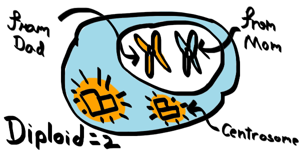 This is where we'll start. Notice that here the centrosomes are duplicated as well.Meiosis in Two Parts
On this page, we're going to chuck up the process of meiosis into to two parts, which is fine because during meiosis, the cell divides two times.
Of course inbetween the divisions, there are details that will be left out until the next couple of sections on this page. The end of interphase to the first division is called Meiosis I, and immediately after that to the end of the second division is called Meiosis II. This is a simple image to describe this process. You'll see that there are more steps involved later.
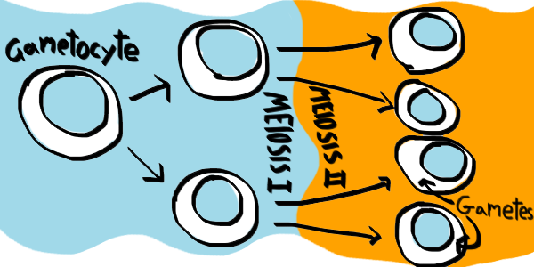 Meiosis I (left) and Meiosis II (right)Prophase I and Crossing Over
Let us begin with the first step of meiosis: Meiosis I. This process is split up into four parts. Just remembering PMAT helps to remember the order:
- Prophase I
- Metaphase I
- Anaphase I
- Telophase I
In prophase I, each of the homologous pairs (same gene placement, different genes from each parent) of chromosomes will come together to form a pair called a tetrad.
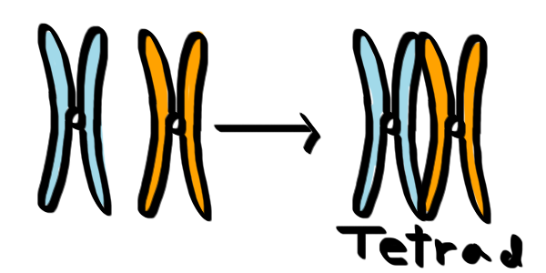 Two homologous pairs combine into a tetrad.Afterward, the tips of these chromosomes will come together, wrapping around one another. This process is called crossing over where they'll exchange genes. The parts of the chromosome where they cross over at is the chiasma. It is important to note that only an entire gene will be swapped, not half of one. This means that if your dad had the brown hair color gene, and your mom the red hair color gene, the chromosomes might swap which chromosome gets which gene.
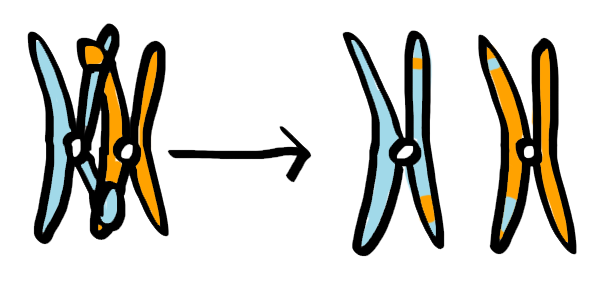 The tetrad crosses over at random, changing the chromosome's genes.By the time all the chromosomes crossed over and split up from their tetrads, the nucleus begins to dissolve, and the centrosomes move at each end.
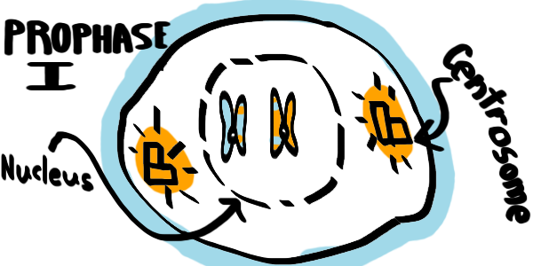 End of Prophase IWERE YOU PAYING ATTENTION
What do you think is the point of crossing over?
The First Division
Prophase I was a big step, so be glad to know that the next three steps of meiosis I (first division of meiosis) are fairly small.
During metaphase I, the nucleus has completely dissolved, and each homologous pair of chromosomes have moved to the middle because this is the step where spindle fibers attach to centromeres.
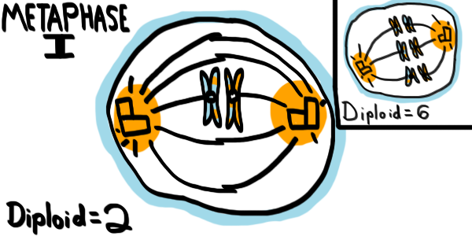 Metaphase IIf you have a full set (diploid) number of two, there will be one pair. If diploid number is six, three pairs will be in the middle (M in middle for Metaphase), or if you're a human with a diploid number of 46, 23 pairs will be in the middle.
Looking at the figure, notice that the chromosomes from your mom (blue) and those from your dad (orange) don't have to all be on the same side. This is called independent assortment, and it allows for even more variation. If you have 46 chromosomes, there are 8.3 million possible ways they can be arranged.
During the next step, anaphase I, the chromosomes come apart (A in apart for Anaphase).
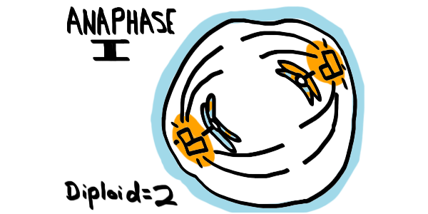 Anaphase IAfter anaphase I is telophase I, where the cell finally begins to split up and the nucleus forms back:
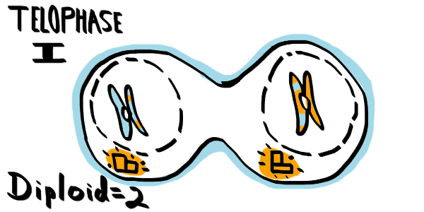 Telophase IOnce the cell completely splits up, you cannot say that each cell is still diploid (that is, not each cell has its full set anymore). If the full set number were 2, then each cell will now have one chromosome. When there is half the number of chromosomes, the cell is haploid. Remember, HAploid means HAlf of diploid.
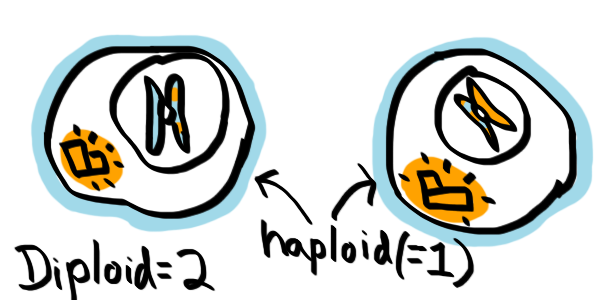 The cells are completely split into two haploid cells.WERE YOU PAYING ATTENTION
How many chromosomes are in a human haploid cell (after meiosis I)?
Another Separation
Now we are ready for meiosis II. The cell has already divided once, so it will divide again in these steps:
- Prophase II
- Metaphase II
- Anaphase II
- Telophase II
Sounds familiar? These steps are actually very similar to those in meiosis I, so it's not a lot more to memorize. Just keep PMAT in mind.
We'll begin with two haploid cells, each with two centrosomes.
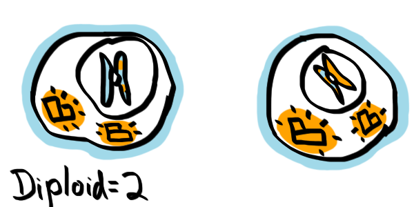 Before meiosis II, this is where we'll start. Notice that the centrosomes duplicated already.Now here are the steps:
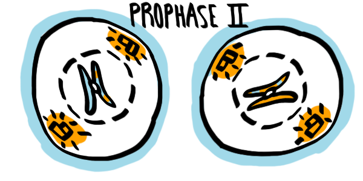 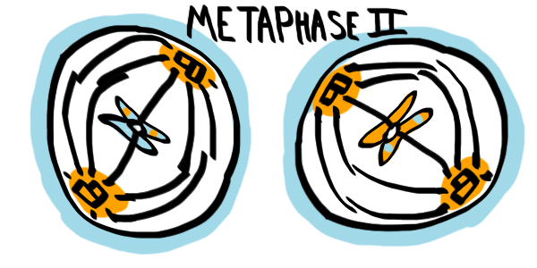 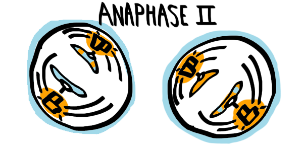 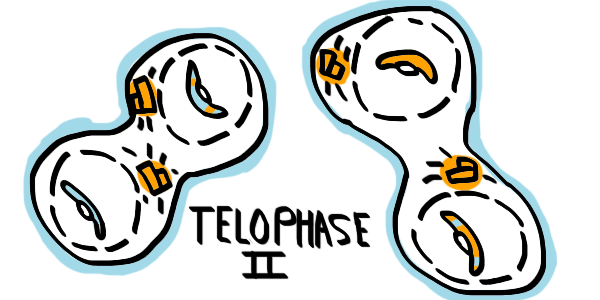 And finally: 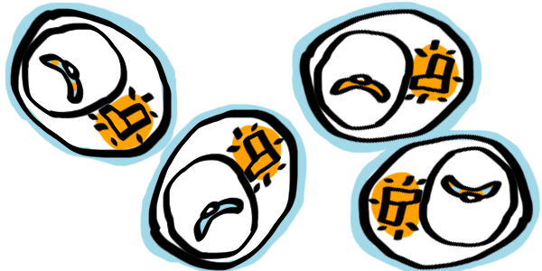As you can see in the images, the nucleus dissolves as the centrosomes move to separate sides during prophase II. During metaphase II, the chromsomes meet up into the middle again, not in pairs, and during anaphase II, the chromatids move apart instead of whole chromosomes.
Note that for this brief moment during anaphase and telophase, you have a full set of chromosomes in each cell again (just that these ones each have one part, a single chromatid).
During telophase II, the cells divide until you have four entire haploid (half a full set) cells.
WERE YOU PAYING ATTENTION
How many chromosomes and chromatids are in each cell after telophase II in humans?
WERE YOU PAYING ATTENTION
Choose the best answer that compares a cell during telophase I and telophase II:
BRIDGING QUESTION
Which kind of cell goes through meiosis?